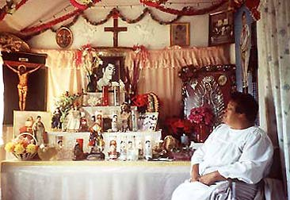

Australia's premier Spanish language Mexican punk band 
 |
 |
 |
 |
| The Early Days | Here and Now | A Critical Perspective |
Nuestro Propio Animal |
site design, scripting and shockwave audio by virtual artists and paul champion. hosted by virtual artists.